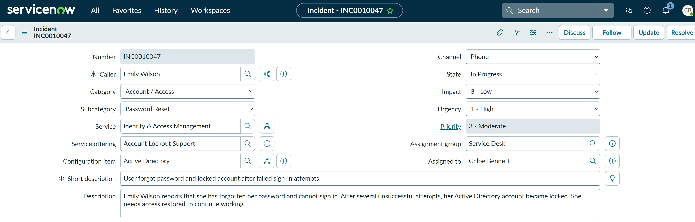
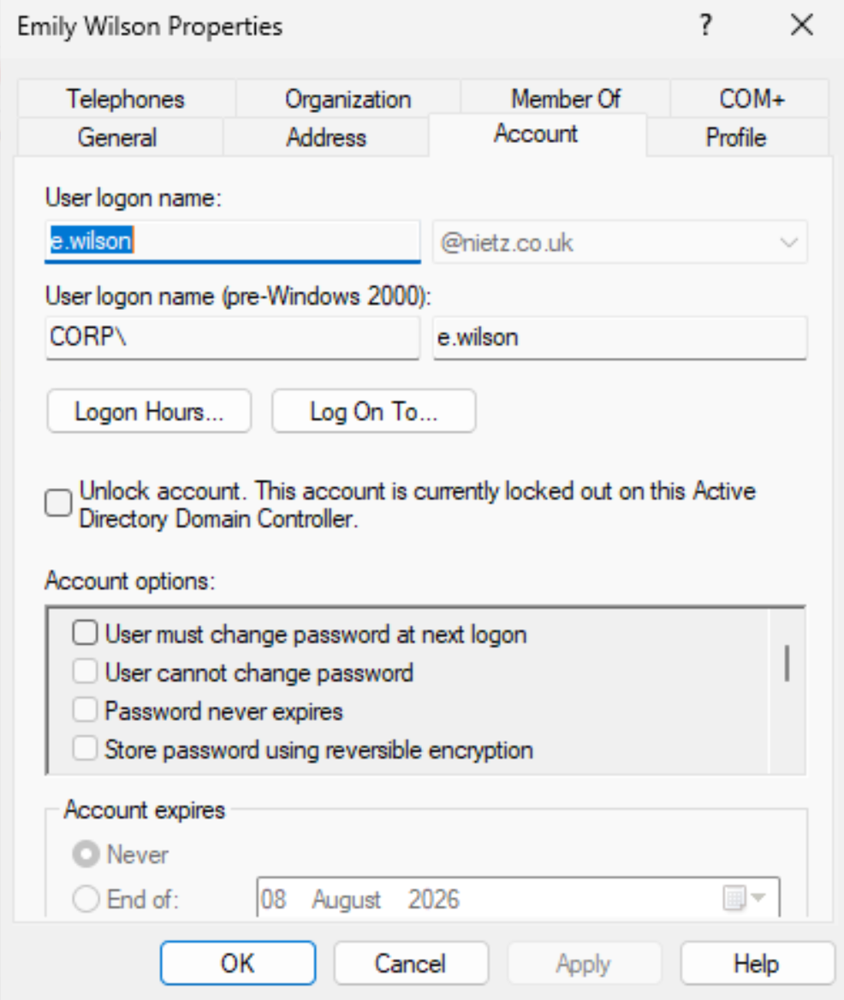
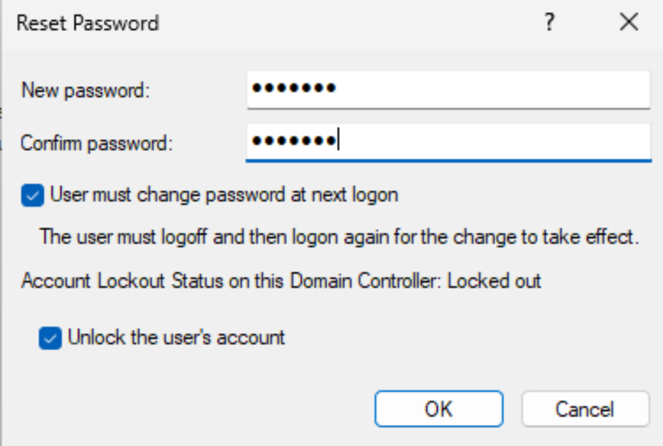
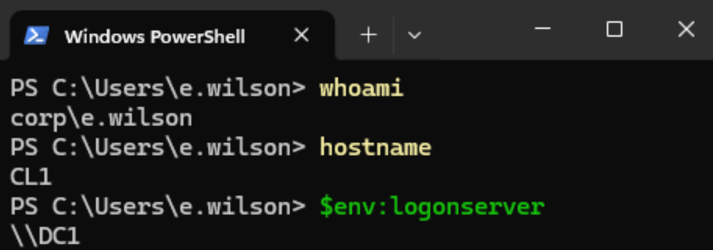
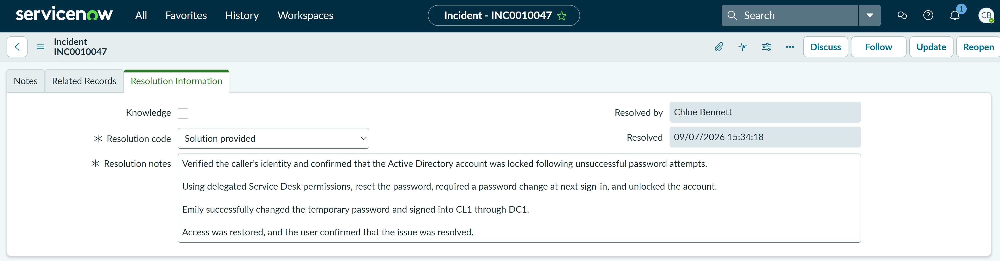

TS-001: Forgotten password and locked account
Resolved a first-line identity incident for an HR user who had forgotten her password and locked her Active Directory account after repeated sign-in attempts. The recovery followed the approved identity-verification process, used delegated password-reset and account-unlock permissions, and required a password change before access was validated.
Scenario
Emily Wilson reported that she had forgotten her password and could not sign in. After several unsuccessful attempts, her Active Directory account became locked. Although the domain lockout would eventually expire, Emily still did not know the correct password, so the Service Desk needed to verify her identity, reset the password and restore access.
ServiceNow Ticket

Investigation
I checked Emily Wilson's account in Active Directory Users and Computers. The Account tab confirmed that the account was currently locked on the domain controller, matching the user's report of repeated unsuccessful sign-in attempts.

Fix Applied
After verifying the caller's identity, I used Chloe Bennett's delegated Service Desk permissions to reset Emily's password. I selected User must change password at next logon and Unlock the user's account, restoring access without using Domain Admin rights.

Validation
Emily signed into the domain-joined Windows client with the temporary password, changed it when prompted and reached the desktop successfully. I then confirmed the signed-in identity, workstation name and domain logon server in PowerShell.

CL1 as CORP\e.wilson, authenticated through DC1.Resolution
The incident was resolved with the resolution code Solution provided. The resolution notes recorded the identity check, locked-account confirmation, delegated password reset and unlock, forced password change and successful domain sign-in validation.

Summary
- Resolved a P3 Moderate identity incident for a single user with a forgotten password and locked account.
- I confirmed the locked account state in Active Directory.
- I reset the password, required a password change at next sign-in and unlocked the account using delegated Service Desk permissions.
- I validated successful domain sign-in on
CL1asCORP\e.wilson, authenticated throughDC1. - I resolved the incident in ServiceNow using the code Solution provided with clear resolution notes.
- The workflow restored access while maintaining least privilege and avoiding the use of Domain Admin credentials.